library(tidyverse)
set.seed(123)13 Advanced Data Visualisation Techniques
Learning Objectives
- Learn advanced data visualisation techniques
- Create contour plots to visualise interaction effects
- Create a pyramid plot to visualise population distribution
In this chapter, we will learn how to create advanced data visualisation techniques using ggplot2. We will create contour plots to visualise interaction effects and pyramid plots to visualise population distribution.
13.1 Example: Detecting Interaction Effects with Contour Plots
Interaction effects can cause predictors to act together on the response variable, leading to additional variation in the response. Interaction effects occur when the combined effect of two or more predictors is different from what would be expected if the impact of each predictor were considered alone. For instance, in the case of cardiovascular disease (CVD) risk prediction, the interaction between age and cholesterol levels can have a significant impact on the risk of developing heart disease. In addition, if smoke is added to the model, the effect of cholesterol levels on CVD risk may change depending on whether the individual is a smoker or non-smoker. So, smoke is said to interact with cholesterol levels in predicting CVD risk, as well as age, but in what way?
y=\beta_0 +\beta_1 x_1 + \beta_2 x_2 +\beta_3 x_3 + \epsilon \tag{13.1}
where y is the risk of developing heart disease, \beta_0 is the intercept, \beta_1 and \beta_2 are the coefficients for the predictors x_1 and x_2, respectively, and \beta_3 is the coefficient for the interaction term x_1*x_2. The error term \epsilon accounts for the variability in the response variable that is not explained by the predictors.
There are four type of interactions:
- additive is when \beta_3 \approx{0}
- antagonistic is when \beta_3 < 0
- synergistic is when \beta_3 > 0
- atypical is when \beta_3 \neq 0
In order to simulate the interaction effects for each type of interaction, we cannot just simulate random values for y, we need to simulate different levels of interactions between predictors setting up the values for the coefficients \beta_0, \beta_1, \beta_2, and \beta_3, and the predictors x_1 and x_2 and the error term \epsilon.
Load the necessary libraries and set the seed for reproducibility.
Simulate the data ready for different interaction effects.
beta0<- rep(0,200)
beta1<- rep(1,200)
beta2<- rep(1,200)Then, simulate the predictors x_1 and x_2 and the error term \epsilon for 200 observations.
x1<- runif(200, min = 0, max = 1)
x2 <- runif(200, min = 0, max = 1)
e <- rnorm(200)Then for each of the three cases we simulate a \beta_3 based on antagonism, no interaction, or synergism with values -10, 0, and 10 respectively.
Case 1: Antagonism
beta3 <- rep(-10,200) Assemble the values for the coefficients and predictors into the equation, to obtaining the response variable y. This will be our synthetic “observed” data.
y1 = beta0 + beta1*x1 + beta2*x2 + beta3*(x1*x2) + eApply a linear model to the observed data to predict the response variable y based on interaction between x_1 and x_2.
observed1 <- tibble(y1, x1, x2)
mod1 <- lm(y1 ~ x1*x2, data = observed1)
observed1$z <- predict(mod1, observed1)Then create a grid of values for x_1 and x_2 to predict the response variable y based on the interaction between x_1 and x_2.
grid <- with(observed1,
interp::interp(x = x1, y = x2, z))
griddf <- subset(data.frame(x = rep(grid$x, nrow(grid$z)),
y = rep(grid$y,
each = ncol(grid$z)),
z = as.numeric(grid$z)),!is.na(z))p1 <- ggplot(griddf, aes(x, y, z = z)) +
geom_contour(aes(colour = after_stat(level),
linetype = factor(after_stat(level))),
linewidth = 2) +
scale_color_viridis_c()+
guides(linetype = "none")+
labs(title="Antagonism",
color="Prediction", x = "x1", y = "x2")+
theme(legend.position = "top")Case 2: Additive (no interaction)
beta3 <- rep(0,200) y2 = beta0 + beta1*x1 + beta2*x2 + beta3*(x1*x2) + e
observed2 <- tibble(y2, x1, x2)
mod2 <- lm(y2 ~ x1*x2, data = observed2)
observed2$z <- predict(mod2, observed2)
grid <- with(observed2, interp::interp(x = x1, y = x2, z))
griddf <- subset(data.frame(x = rep(grid$x, nrow(grid$z)),
y = rep(grid$y,
each = ncol(grid$z)),
z = as.numeric(grid$z)),!is.na(z))p2 <- ggplot(griddf, aes(x, y, z = z)) +
geom_contour(aes(colour = after_stat(level),
linetype = factor(after_stat(level))),
linewidth = 2) +
scale_color_viridis_c()+
guides(linetype = "none")+
labs(title="Additive",
color="Prediction", x = "x1", y = "x2")+
theme(legend.position = "top")Case 3: Synergism
beta3<- rep(10,200) y3 = beta0 + beta1*x1 + beta2*x2 + beta3*(x1*x2) + e
observed3 <- tibble(y3, x1, x2)
mod3 <- lm(y3 ~ x1 * x2 , data = observed3)
observed3$z <- predict(mod3, observed3)
grid <- with(observed3, interp::interp(x=x1,y=x2,z))
griddf <- subset(data.frame(x = rep(grid$x, nrow(grid$z)),
y = rep(grid$y, each = ncol(grid$z)),
z = as.numeric(grid$z)),!is.na(z))p3 <- ggplot(griddf, aes(x, y, z = z)) +
geom_contour(aes(colour = after_stat(level),
linetype = factor(after_stat(level))),
linewidth = 2) +
scale_color_viridis_c()+
guides(linetype = "none")+
labs(title="Synergistic",
color="Prediction", x = "x1", y = "x2")+
theme(legend.position = "top")library(patchwork)
p1|p2|p3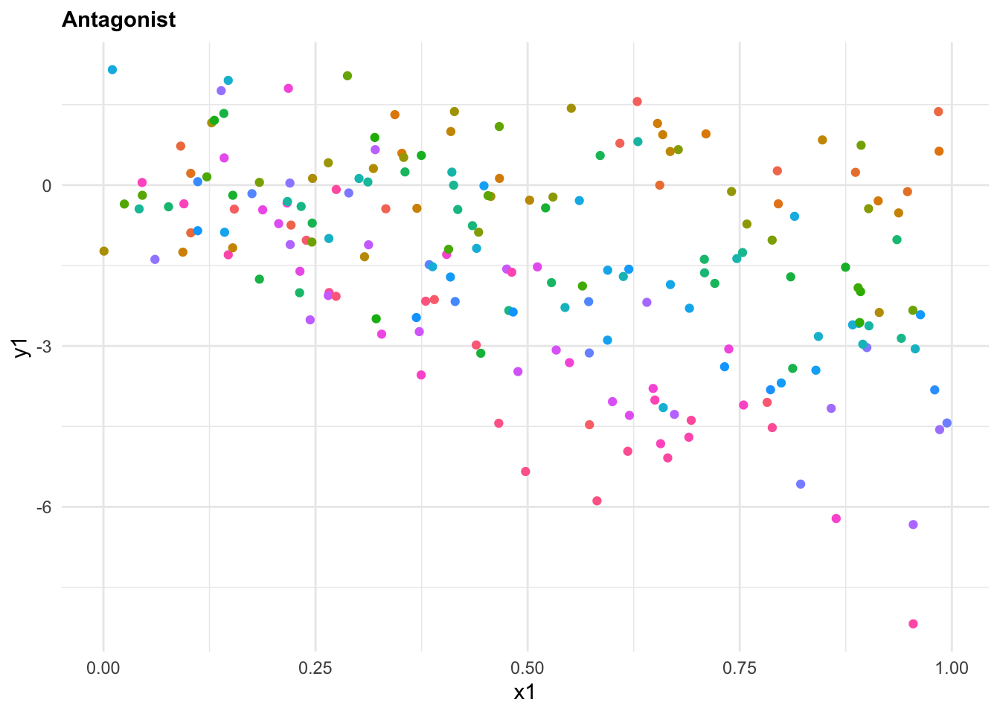
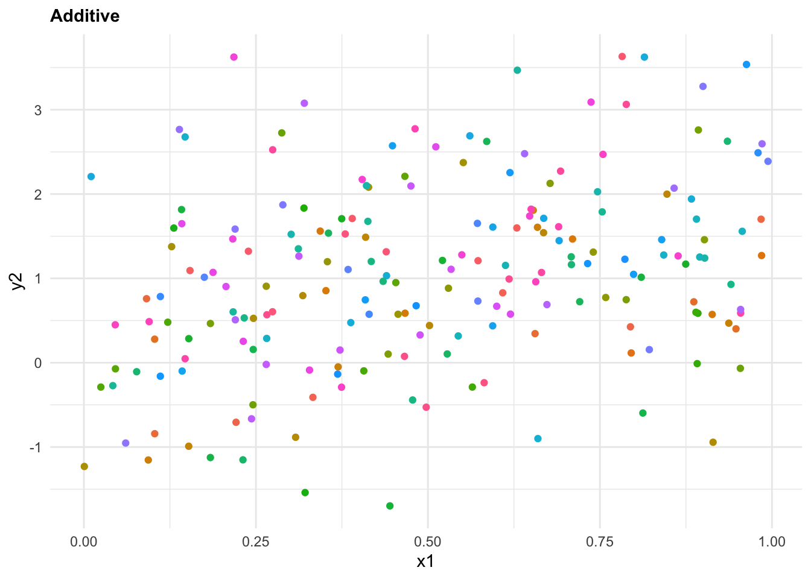
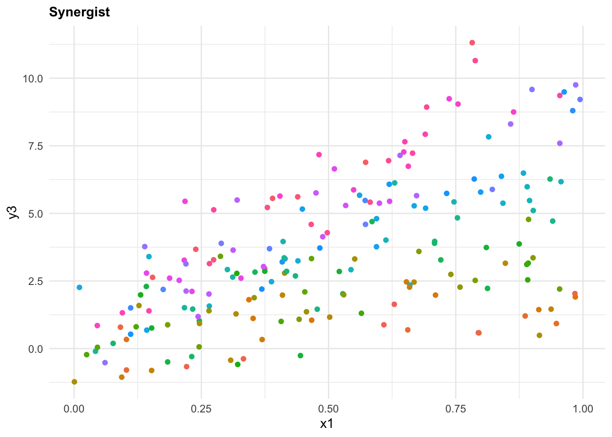
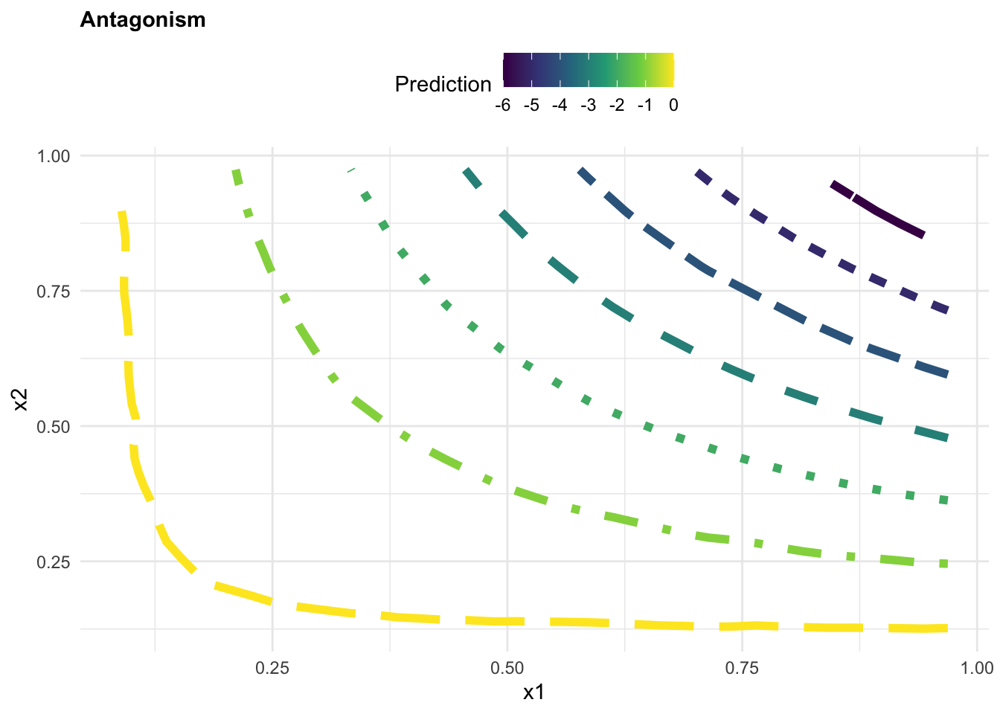
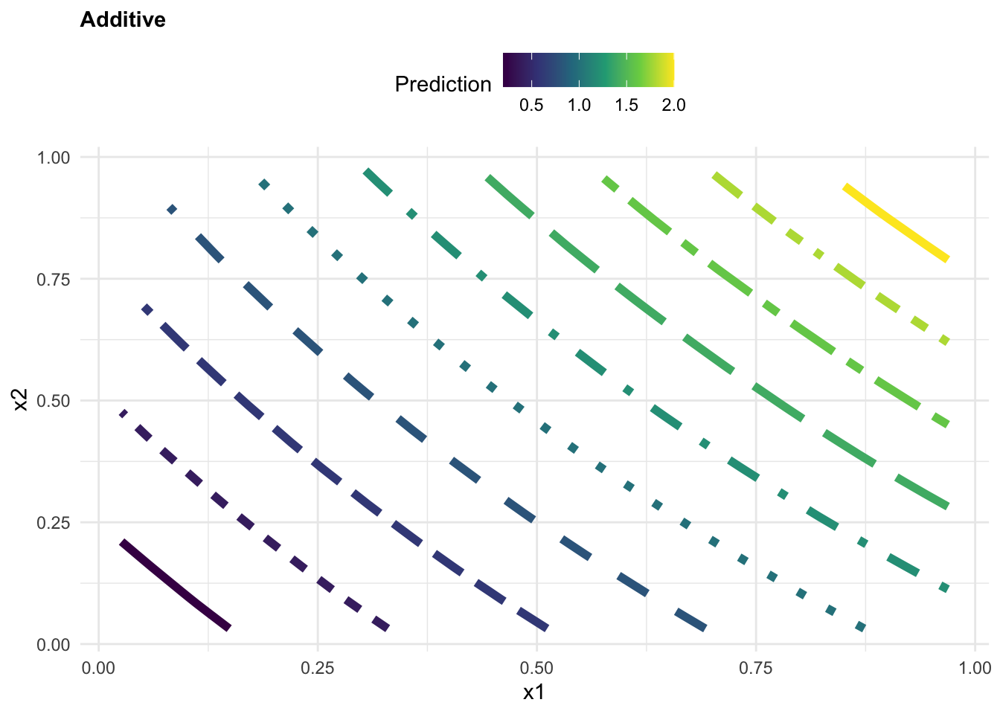
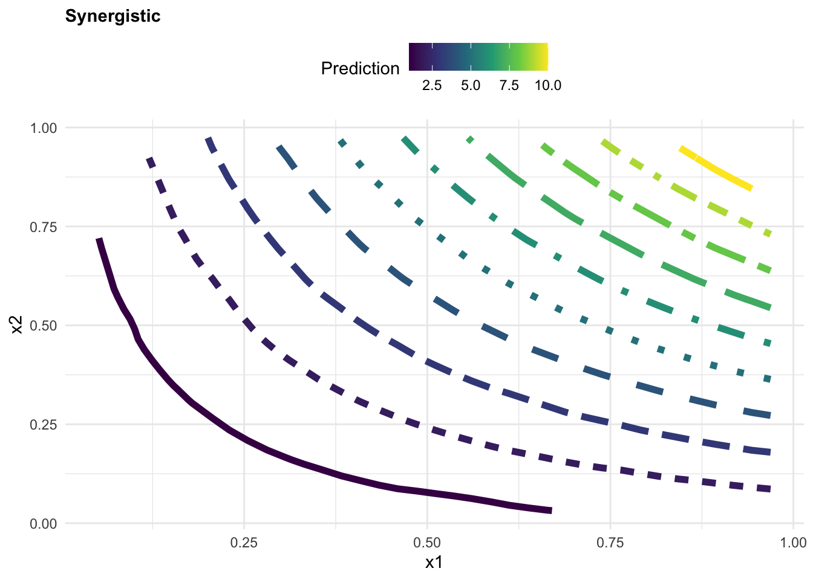
13.2 Example: Pyramid Plot
A pyramid plot is a type of bar chart that displays the distribution of a population by age. We use the data from the {wpp2022} package, data(package = "wpp2022") which is a collection of population datasets, with population estimates. Data are from the United Nations World Population Prospects 2022.
library(wpp2022)The data contains the following columns:
# load the data on the population
data(popAge1dt)
popAge1dt %>% head()
#> country_code name year age popM popF pop
#> <int> <char> <int> <int> <num> <num> <num>
#> 1: 900 World 1949 0 41312.32 39439.29 80751.61
#> 2: 900 World 1949 1 35761.05 34274.35 70035.40
#> 3: 900 World 1949 2 33514.72 32065.08 65579.81
#> 4: 900 World 1949 3 31076.46 29780.73 60857.19
#> 5: 900 World 1949 4 28786.66 27647.06 56433.72
#> 6: 900 World 1949 5 28082.09 26882.94 54965.03Check all Countries in the dataset with View():
popAge1dt %>% count(name) %>% ViewData are then aggregated to show the total population for all ages by year. Here, in particular, we show the use of geomtextpath::geom_textline() to add a label to the World line plot. {geomtextpath} is a nice R-package which allows you to add text along a path.
all_ages <- popAge1dt %>%
group_by(year, name) %>%
reframe(tot_pop=sum(pop))
all_ages %>%
filter(!name == "World")%>%
ggplot(aes(x = year, y = tot_pop, group = name)) +
geom_line(color= "grey", linewidth =0.2) +
geomtextpath::geom_textline(data = all_ages %>% filter(name == "World"),
aes(label=name),
color = "red", linewidth = 1) +
labs(title = "United Nations World Population Prospects [1949 - 2021]",
x = "Year", y = "Population in thousands",
caption = "Data Source: UN World Pop 2022| Graphic: @fgazzelloni") 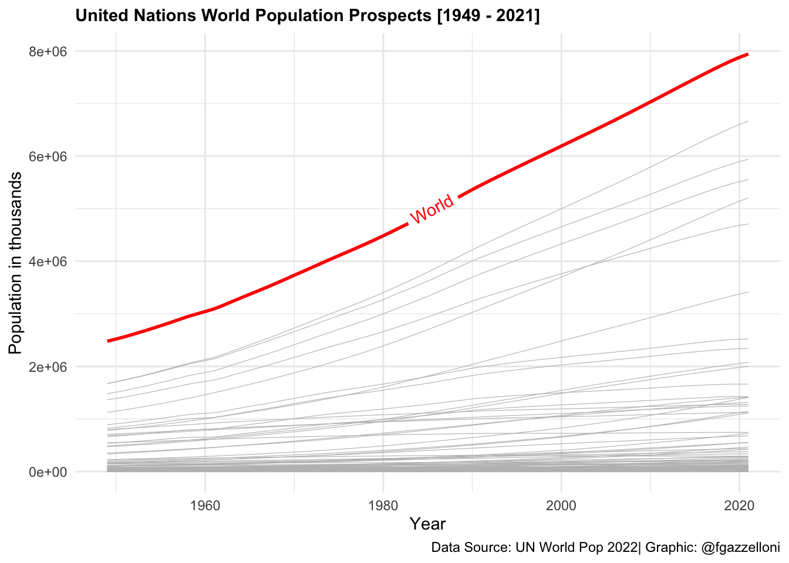
Data are then transformed to a long format to create a pyramid plot. We select the columns name, year, age, popF, and popM and pivot the data to a long format using the pivot_longer() function. We then create a new column value that contains positive values for male population and negative values for females.
data <- popAge1dt %>%
select(name, year, age, popF, popM) %>%
pivot_longer(cols = c(popM, popF),
names_to = "sex",
values_to = "population") %>%
mutate(value = ifelse(sex == "popF",
as.integer(population * -1),
as.integer(population)))
data %>% head()
#> # A tibble: 6 × 6
#> name year age sex population value
#> <chr> <int> <int> <chr> <dbl> <int>
#> 1 World 1949 0 popM 41312. 41312
#> 2 World 1949 0 popF 39439. -39439
#> 3 World 1949 1 popM 35761. 35761
#> 4 World 1949 1 popF 34274. -34274
#> 5 World 1949 2 popM 33515. 33514
#> 6 World 1949 2 popF 32065. -32065Then, we can create pyramid plots that show the distribution of the population by age for High-income countries, Lower-middle-income countries, and Low-income countries, and put them in one chunk with the option layout-ncol: 3.
data %>%
filter(name == "High-income countries") %>%
ggplot(aes(x = age, y = value, fill = sex)) +
geom_bar(stat = "identity") +
scale_fill_manual(values = c("#CC6666", "#9999CC")) +
coord_flip() +
labs(title = "United Nations World Population Prospects 2022",
subtitle = "High-income countries",
x= "Age", y = "Population in thousands", fill = "",
caption = "Data Source: UN World Pop | Graphic: @fgazzelloni") +
theme_minimal() +
theme(plot.title = element_text(face = "bold",
hjust = 0.5),
plot.subtitle = element_text(hjust = 0.5),
axis.text = element_text(size = 10))
data %>%
filter(name == "Lower-middle-income countries") %>%
ggplot(aes(x = age, y = value, fill = sex)) +
geom_bar(stat = "identity") +
scale_fill_manual(values = c("#CC6666", "#9999CC")) +
coord_flip() +
labs(title = "United Nations World Population Prospects 2022",
subtitle = "Lower-middle-income countries",
x= "Age", y = "Population in thousands", fill = "",
caption = "Data Source: UN World Pop | Graphic: @fgazzelloni") +
theme_minimal() +
theme(plot.title = element_text(face = "bold",
hjust = 0.5),
plot.subtitle = element_text(hjust = 0.5),
axis.text = element_text(size = 10))
data %>%
filter(name == "Low-income countries") %>%
ggplot(aes(x = age, y = value, fill = sex)) +
geom_bar(stat = "identity") +
scale_fill_manual(values = c("#CC6666", "#9999CC")) +
coord_flip() +
labs(title = "United Nations World Population Prospects 2022",
subtitle = "Low-income countries",
x= "Age", y = "Population in thousands", fill = "",
caption = "Data Source: UN World Pop | Graphic: @fgazzelloni") +
theme_minimal() +
theme(plot.title = element_text(face = "bold",
hjust = 0.5),
plot.subtitle = element_text(hjust = 0.5),
axis.text = element_text(size = 10))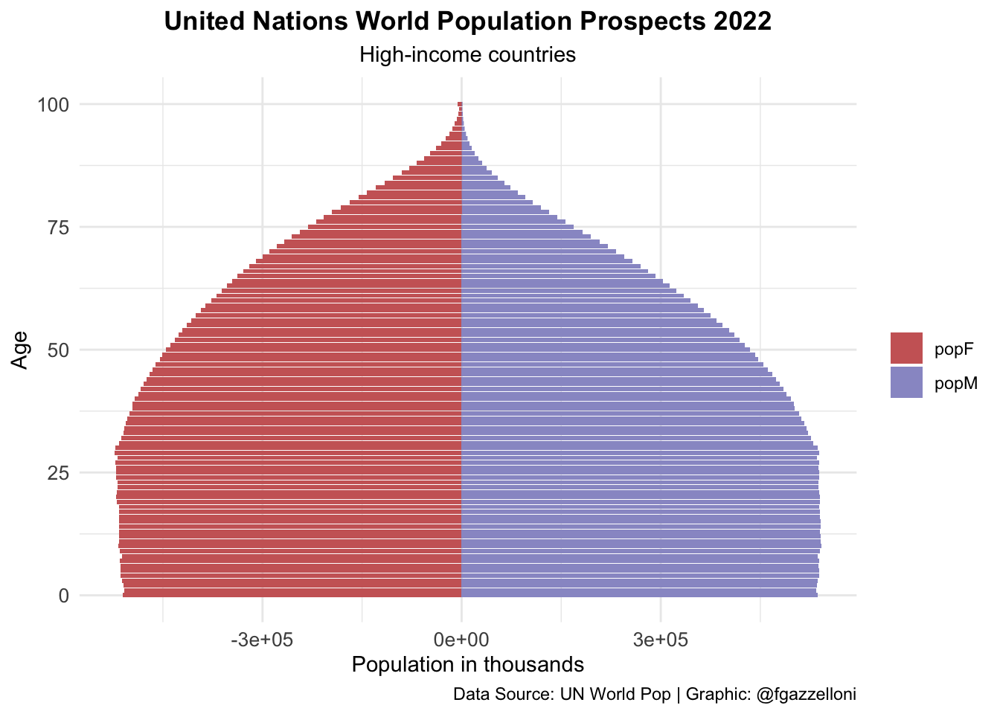
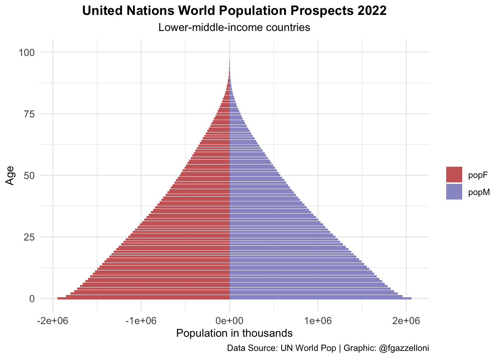
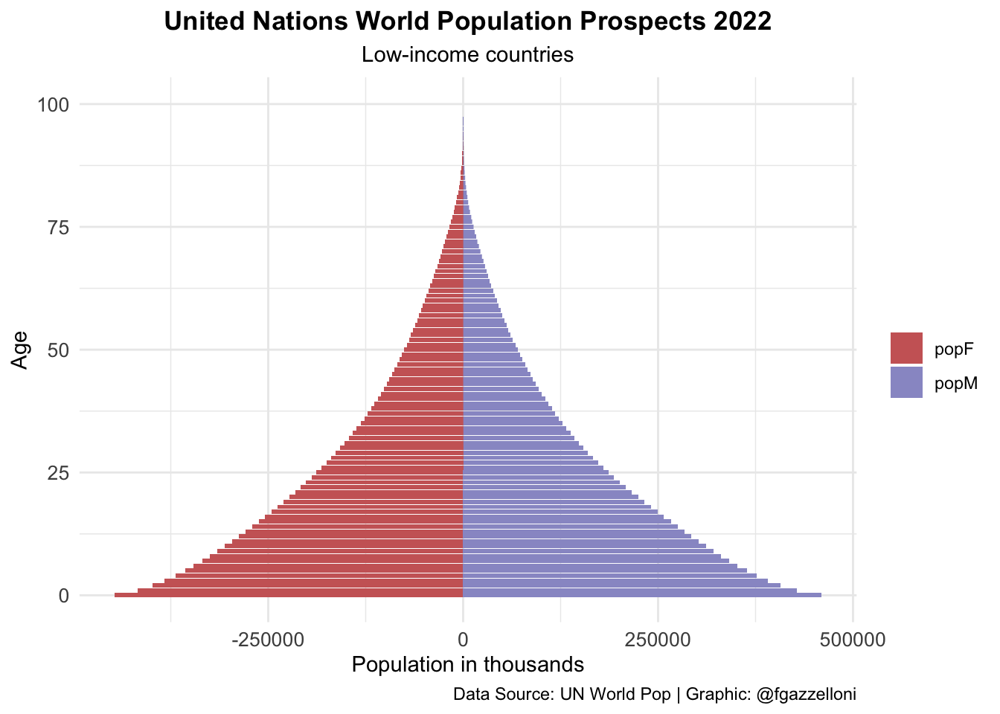
pyramid <-
data %>%
filter(name == "World") %>%
ggplot(aes(x = age, y = value, fill = sex)) +
geom_bar(stat = "identity") +
scale_fill_manual(values = c("#CC6666", "#9999CC")) +
coord_flip() +
labs(title = "UN Pop 2022 - {closest_state}",
x= "Age", y = "Population in thousands", fill = "",
caption = "Data Source: UN World Pop | Graphic: @fgazzelloni") +
theme_minimal() +
theme(plot.title = element_text(face = "bold",
hjust = 0.5),
axis.text = element_text(size = 10))library(gganimate)
pyramid_gif <- pyramid +
transition_states(year,
transition_length = 1,
state_length = 2) +
enter_fade() +
exit_fade() +
ease_aes("cubic-in-out")
animate(pyramid_gif,
fps = 72, duration = 6,
width = 1200, height = 1400, res = 180,
renderer = gifski_renderer("images/12_unp_pyramid.gif"))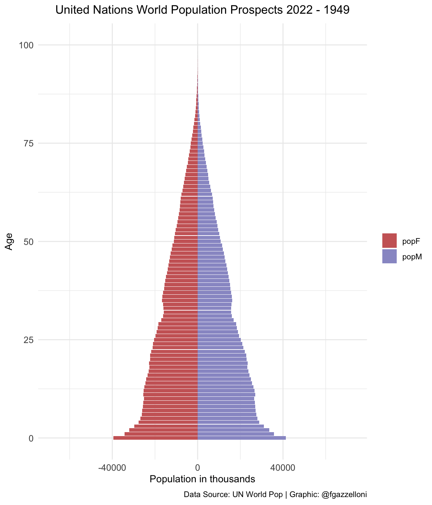